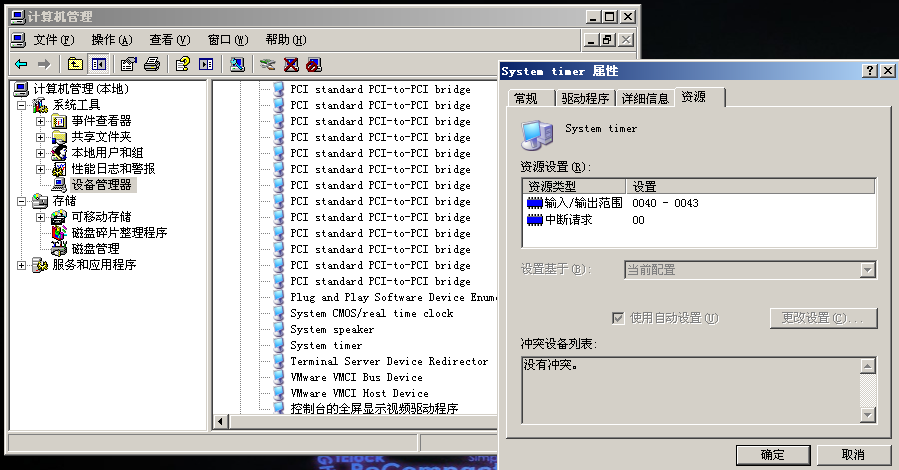
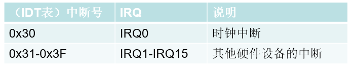
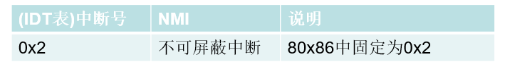
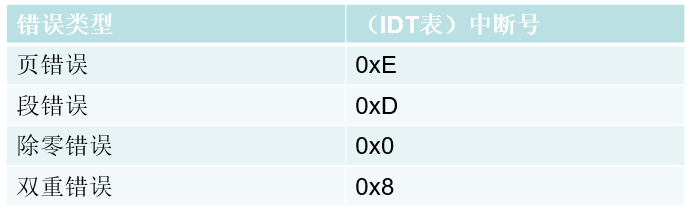
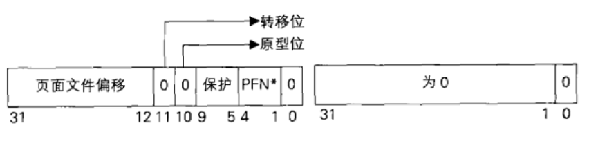

# 什么是中断
中断通常是由 CPU 外部的输入输出设备 (硬件) 所触发的，供外部设备通知
CPU “有事情需要处理”，因此又叫中断请求 (Interrupt Request).中断请求的目的是希望 CPU 暂时停止执行当前正在执行的程序，转去执行
中断请求所对应的中断处理例程 (中断处理程序在哪有 IDT 表决定)80x86 有两条中断请求线：
非屏蔽中断线，称为 NMI（NonMaskable Interrupt）
可屏蔽中断线，称为 INTR（Interrupt Require）
假设没有中断这种机制，当一个的程序的代码为死循环时，其他的程序就没有机会执行了。
中断的本质：改变 CPU 的执行路线
# 可屏蔽中断
描述：
在硬件级，可屏蔽中断是由一块专门的芯片来管理的，通常称为中断控制器
它负责分配中断资源和管理各个中断源发出的中断请求
为了便于标识各个中断请求，中断管理器通常用 IRQ（Interrupt Request）后面加上数字来表示不同的中断
比如：在 Windows 中，时钟中断的 IRQ 编号为 0，也就是 IRQ0
# 时钟中断
描述：
大多数操作系统时钟中断在 10-100MS 之间，Windows 系列为 10-20MS
Windows 时钟中断每隔 10~20MS 会向 CPU 发送一个请求，当 CPU 收到请求时，操作系统就会接管 CPU，指定 CPU 去执行一段代码，操作系统在这段代码里便有机会进行线程的切换。这样，即便一个程序进入死循环，操作系统依然有机会进行线程切换
当然，操作系统主要并不是通过时钟中断来进行线程切换，而只是有机会进行线程切换，这里只是举个例子。

# 可屏蔽中断如何处理？
描述：
- 时钟中断的 IRQ 编号为 0 ，所在位置为 IDT [0x30]
- IRQ1~IRQ15 分别对应 IDT [0x31]~IDT [0x35]

特别说明：
1、如果自己的程序执行时不希望 CPU 去处理这些中断，可以
用 CLI 指令清空 EFLAG 寄存器中的 IF 位
用 STI 指令设置 EFLAG 寄存器中的 IF 位
2、硬件中断与 IDT 表中的对应关系并非固定不变的
参见：APIC（高级可编程中断控制器）
# 不可屏蔽中断如何处理？

特别说明：
当非可屏蔽中断产生时，CPU 在执行完当前指令后会里面进入中断处理程序
非可屏蔽中断不受 EFLAG 寄存器中 IF 位的影响，一旦发生，CPU 必须处理
非可屏蔽中断处理程序位于 IDT 表中的 2 号位置
# 异常
描述：
异常通常是 CPU 在执行指令时检测到的某些错误 ，比如除 0、访问无效页面等。
中断与异常的区别：
中断来自于 外部设备 ，是 中断源 （比如键盘）发起的，CPU 是被动的异常来自于 CPU 本身 ，是 CPU 主动产生的- INT N 虽然被称为 “软件中断”，但其本质是异常
- EFLAG 的
IF位对INT N无效。
# 异常处理
描述：
无论是由硬件设备触发的中断请求还是由 CPU 产生的异常 ，处理程序都在
IDT表
常见的异常处理程序：

页错误 ：当我们访问一个 线性地址 ，而这个线性地址指向的物理页是 无效的 ，便会触发 CPU 异常，该异常位于 E 号门 （IDT [0xE]）段错误 ：一旦段的运算发生异常时（如权限检查），便会走 D 号门 （IDT [0xD]）除0错误 ：当除数为 0 时，会触发异常，这时走 0 号门 （IDT [0x0]）双重错误 ：假设 执行一个异常（如页错误）时又产生了一个错误 ，那么便会触发双重错误，这时走 8 号门 （IDT [0x8]）
# 缺页异常
缺页异常的 产生 （例举两种）：
- 当 PDE/PTE 的 P=0 时会发生缺页异常
- 当 PDE/PTE 的属性为只读但程序试图写入时会发生缺页异常
一旦发生缺页异常，CPU 会执行 IDT 表中的 0xE 号中断处理程序，由操作系统来接管，后面会学习的。

# 实验
# 分析 IDT 表中 0x2 号中断的执行流程
# 分析 IDT 表中 0x8 号中断的执行流程
# Reference
https://blog.csdn.net/qq_41988448/article/details/102760570